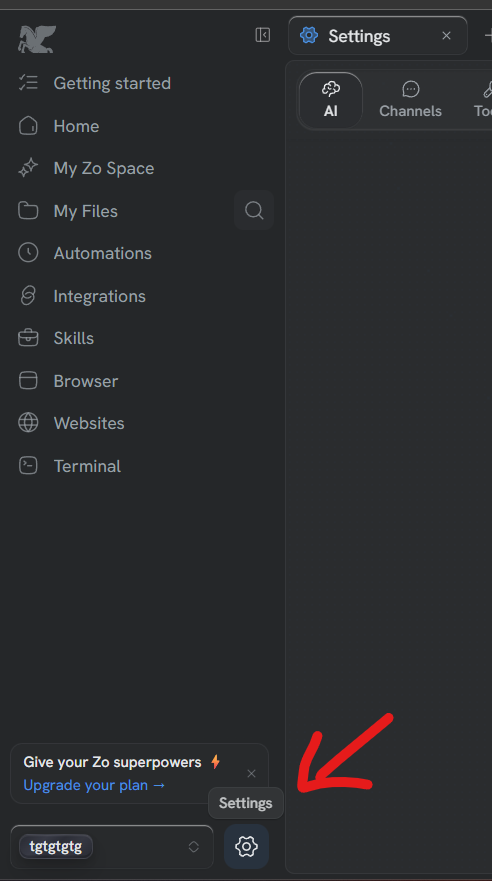
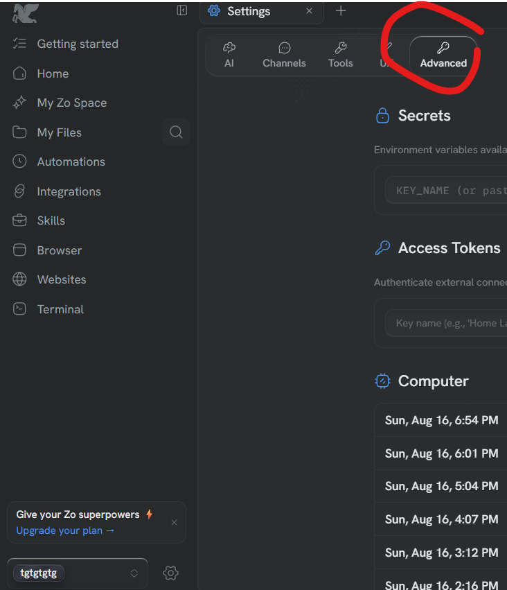
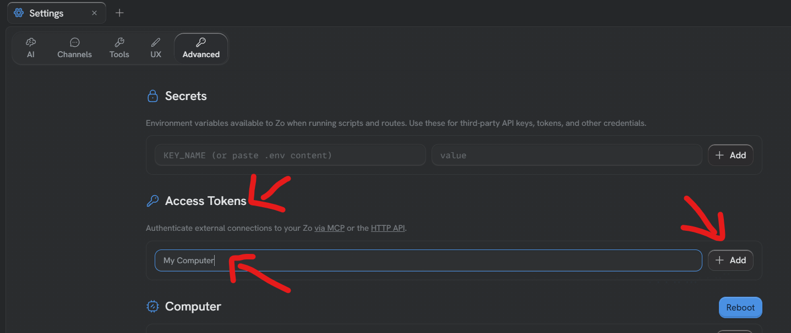
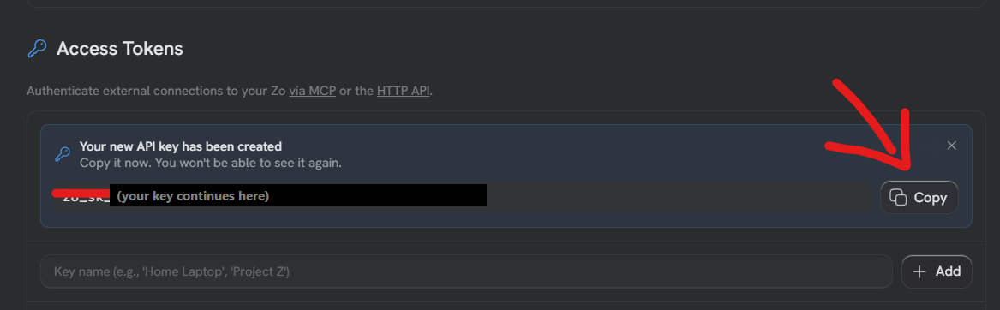

Getting your Zo key
Why
Your Zo needs to let Claude and ChatGPT talk to it, and a key is how it knows
it is really you asking. You make it once and you never think about it again.
Steps
- Click Settings
The gear at the bottom of the left-hand menu.

- Click Advanced
Along the row of tabs at the top — AI, Channels, Tools, UX, Advanced. It is
the last one.

- Find Access Tokens and give the key a name
Scroll down to the part headed Access Tokens. Type any name you like in the
box — my computer is fine — then click Add.

- Copy the key
Zo shows you a long line starting
zo_sk_. Click Copy, then paste it tome here.

Careful
Zo shows this key once, and says so on the screen. If you close that box
before copying it, nothing is broken — just make another one the same way.
Nobody needs this key except your own computer. Do not send it to anyone,
including anyone claiming to be from Vimigo.
If your screen doesn't look like this, tell me — I'll walk you through it instead.